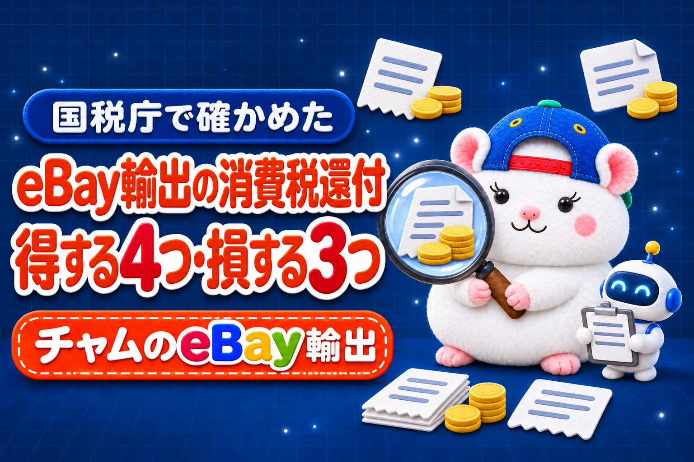

eBay輸出の消費税還付には、知っていると得することと、知らないと損することがあります。
例えば、eBayの手数料が月10万円なら、その消費税1万円も還付の対象です。
逆に、届出を1枚出し忘れていると、仕入れが何百万円あっても、還付は0円です。
輸出の売上には、消費税がかかりません。
だから、仕入れで払った消費税が還付される。
ここまでは、eBay輸出をしている人ならよく聞く話です。
でも、細かい決まりを知らないと、受け取れるはずのお金を取りこぼしたり、まるごと0円になったりします。
この記事では、国税庁の資料で確かめた7つを、お金の例で書きました。
知っていると得する4つ
- eBayの手数料の消費税も、還付の対象になる
- 国内の送料・梱包資材・外注費の消費税も、引ける
- 個人から仕入れた分も、引ける道がある
- 3か月ごとに申告すると、還付金が早く入る
知らないと損する3つ
- 免税事業者のままだと、還付は0円
- 簡易課税・2割特例だと、還付は0円
- 書類がないと、還付されないか、保留される
この記事を書いた人
この記事は、梱包以外をAIに任せて、初月から利益10万4,286円を出したチャムが書いています。
いまの店は会社で申告していて、利益の計算には、還付を別の行で入れています。
消費税が還付されるしくみ(輸出免税とは)
日本から海外へ売った商品は、消費税が0%になります。
これを「輸出免税」といいます。
一方で、国内で仕入れるときには、消費税を払っています。
申告のときに「売上の消費税(0円) − 仕入れで払った消費税」を計算すると、マイナスになります。
このマイナスの分が、還付されます。
| 例 | 金額 |
|---|---|
| 仕入れ(税込・インボイスのある店) | 11,000円 |
| そのうち消費税 | 1,000円 |
| eBayで売れた額 | 消費税0円 |
| 還付される額 | 1,000円 |
計算の形は「税込の仕入れ × 10/110」です。
出典: 国税庁 No.6551 輸出取引の免税[1]・消費税法 第7条・第52条[2]
ひとつ大事なのは、還付は払った税を返してもらうだけで、利益が増えるわけではないことです。
還付金が入るのも、申告のあとです。
例えば、ぼくの店では、「もう入ったお金」と「あとで入る見込みのお金」をまぜないように、利益の計算で還付を別の行にしています。
知っていると得する4つ・知らないと損する3つ
| # | 知っておくこと | 例 |
|---|---|---|
| 1 | eBayの手数料の消費税も、還付の対象 | 手数料10万円→1万円 |
| 2 | 国内の送料・梱包資材・外注費の消費税も引ける | 外注費11万円→1万円 |
| 3 | 個人から仕入れた分も、引ける道がある | 1万円未満なら全額 |
| 4 | 3か月ごとに申告すると、還付金が早く入る | 年1回→年4回 |
| 5 | 免税事業者のままだと、還付は0円 | 届出は前の日まで |
| 6 | 簡易課税・2割特例だと、還付は0円 | 本則課税だけ |
| 7 | 書類がないと、還付されないか保留される | 20万円以下の郵便でも要る |
知っていると得する4つ
1. eBayの手数料の消費税も、還付の対象になる
見落としやすいのが、eBayの手数料です。
eBayは、日本のセラーの手数料に、消費税10%をのせています。
落札手数料・広告・ストア・海外の手数料が対象です。
eBayはインボイス(適格請求書)も出しているので、この消費税も、仕入れの消費税と同じように引けます。
例えば、手数料が月10万円なら、1万円です。
請求書は、Seller Hubの「Payments → Reports → Tax invoices」から、毎月の分を取っておきます。
例えば、ぼくの店でも、手数料の消費税は、還付の見込みに入れていませんでした。
受け取れるお金を、少なめに見ていたことになります。
出典: eBay Japan インボイス制度への対応[3]・Tax invoiceの見方[4]・国税庁 適格請求書発行事業者公表サイト(eBay Marketplaces GmbH)[5]
2. 国内の送料・梱包資材・外注費の消費税も、引ける
還付の対象は、商品の仕入れだけではありません。
国内で払った費用の消費税も、インボイスがあれば引けます。
| 費用 | 還付の対象? |
|---|---|
| 商品の仕入れ | 対象 |
| 国内の送料(仕入れ先から届く送料) | 対象 |
| 梱包資材・テープ・箱 | 対象 |
| 外注費(インボイス登録している人) | 対象 |
| eBayの手数料 | 対象 |
| 国際送料 | 対象外 |
| 関税(DDPで払う相手国の税) | 対象外 |
国際送料は、はじめから消費税がかかっていないので、対象外です。
国際郵便も、eBayのラベルの送料も同じです。
出典: 国税庁 No.6551[1]・消費税法基本通達 7-2-1[6]・日本郵便 国際郵便料金と消費税[7]・eBay Japan[3]
3. 個人から仕入れた分も、引ける道がある
フリマやオークションで個人から仕入れると、インボイスがありません。
それでも、消費税を引ける道が3つあります。
| 仕入れ方 | 引ける割合 |
|---|---|
| 1万円未満の仕入れ(少額特例) | 全額 |
| 古物商が、個人から中古品を仕入れる(古物商特例) | 全額 |
| 上のどちらにも当たらない | 70% |
古物商特例を使うには、帳簿に相手の名前と住所、「古物商特例の対象」と書きます。
フリマアプリで1万円以上を仕入れるときは、古物営業法の本人確認も要ります。
70%は、2026年10月1日に80%から下がりました。
2028年10月からは50%になります。
出典: インボイスQ&A 問111(少額特例)[8]・問106/106-2/110(古物商特例)[9]・問113(経過措置)[10]・国税庁 経過措置の変更[11]
例えば、ぼくの店では、個人から仕入れた分は、安全のため還付0円で計算しています。
少なめに見積もっておけば、あとで足りなくなることはありません。
4. 3か月ごとに申告すると、還付金が早く入る(還付はいつ?)
ふつうは年に1回の申告なので、仕入れてから1年以上あとに還付金が入ることもあります。
「課税期間の短縮」を届け出ると、3か月ごとか1か月ごとに申告できます。
仕入れが多いお店ほど、お金が早く手元に入ります。
ただし、申告の回数が年4回か12回に増えます。
一度届け出ると、2年はやめられません。
出典: 消費税法 第19条(課税期間の特例)[2]
知らないと損する3つ
ここからは、知らないと還付が0円になったり、入金が遅れたりする3つです。
5. 免税事業者のままだと、還付は0円(課税事業者選択届出書)
還付を受けられるのは、課税事業者だけです。
前々年(会社は前々事業年度)の売上が1,000万円以下だと、免税事業者になり、還付は受けられません。
売上が1,000万円以下でも還付を受けたいときは、「消費税課税事業者選択届出書」を出します。
出すのは、還付を受けたい年が始まる前の日までです。
一度出すと、2年はやめられません(100万円以上の設備を買うと3年)。
ひとつ気をつけたいのは、eBayの売上も1,000万円の判定に入ることです。
「輸出は消費税0%だから数えない」は、まちがいです。
出典: 国税庁 No.6501 納税義務の免除[12]・No.6501 よくある質問[13]・消費税法基本通達 1-4-2[14]
6. 簡易課税・2割特例だと、還付は0円
還付を受けられるのは、本則課税(一般課税)で申告したときだけです。
| 計算のしかた | 還付 |
|---|---|
| 本則課税(一般課税) | あり |
| 簡易課税 | なし |
| 2割特例(2026年9月まで) | なし |
| 3割特例(2027・2028年・個人だけ) | なし |
簡易課税は「売上の消費税 × 決まった割合」で、仕入れの税を計算するしくみです。
輸出は売上の消費税が0円なので、引ける額も0円になります。
簡易課税の届出を出したままだと、仕入れが多い年でも、還付をまるごと取りこぼします。
出典: 国税庁 No.6505 簡易課税制度[15]・インボイスQ&A 問114(2割特例)[16]・問114-2(3割特例)[17]
7. 書類がないと、還付されないか、保留される(輸出免税の必要書類)
「20万円以下の郵便なら、帳簿に書くだけでいい」は、2021年9月で終わったルールです。
いまは、送り方ごとに残す書類が決まっていて、7年残します。
| 送り方 | 残す書類 |
|---|---|
| EMS・国際小包(20万円以下) | 郵便局の引受証+発送伝票の控え |
| 郵便(20万円超) | 税関が証明した書類 |
| FedEx・DHL・SpeedPAK・CPaSS | 輸出許可書(金額に関係なく) |
クーリエやSpeedPAKで送ると、20万円以下でも郵便の扱いにはなりません。
輸出許可書は、運送会社に頼んで取り寄せます。
DHLは、書類の請求フォームから、通関から3年以内の分を取れます。
輸出許可書の輸出者があなたでないと、原則として免税になりません。
出典: 国税庁 No.6551[1]・消費税法基本通達 7-2-23[6]・令和3年度改正のお知らせ(郵便物の輸出証明)[18]・質疑応答 輸出免税の適用者[19]・DHL 書類請求フォーム[20]
書類は、税務署に聞かれたときにも要ります。
還付の申告をすると、国税庁が還付をいったん保留して、書類を出すように言うことがあります。
書類がそろわないと、入金がそのぶん遅れます。
国税庁が公表している数字です(令和6事務年度=2024年7月〜2025年6月)。
| 実地調査 | 誤りが見つかった | 1件あたりの追徴 | |
|---|---|---|---|
| 消費税の還付申告をした会社 | 4,802件 | 61% | 623万円 |
| (参考)会社の消費税全体 | 約5.3万件 | 約60% | 232万円 |
「出せば必ず調査が来る」わけではありませんが、書類は、すぐ出せる形にしておきます。
出典: 国税庁 消費税の還付申告について[21]・令和6事務年度 法人税等の調査事績の概要 別表[22]
2026年10月から変わった3つ
最近の改正で、eBay輸出に関わるものは3つです。
- インボイスのない仕入れで引ける割合が、80%から70%に下がった
- 2割特例が終わった(2026年9月30日を含む期間まで)
- 代金を現金などで受け取った輸出は、相手国の輸入許可書なども要るようになった
3つ目は、銀行振込のように「相手が払ったことが記録で分かる」受け取り方なら対象外です。
eBayの代金がどちらに当たるかは、国税庁から名指しの説明がまだありません。
注文と入金の記録は、残しておきます。
出典: インボイスQ&A 問113・問114[10][16]・財務省 令和8年度税制改正の解説[23]・消費税法基本通達の改正(7-2-24〜26)[24]
出典
この記事は、2026年11月17日に、次のページを開いて確かめました。
法令・通達・公式のページだけを根拠にしています。円の例は、計算の形を見せるための例です。
- 国税庁 タックスアンサー No.6551 輸出取引の免税 https://www.nta.go.jp/taxes/shiraberu/taxanswer/shohi/6551.htm
- 消費税法(e-Gov 法令検索) https://laws.e-gov.go.jp/law/363AC0000000108
- eBay Japan インボイス制度への対応 https://wwwcojp.ebay.com/knowledge/policy/20231110
- eBay Japan Tax invoiceの見方 https://www.ebay.co.jp/knowledge/shipping/article74
- 国税庁 適格請求書発行事業者公表サイト(eBay Marketplaces GmbH・T1700150104215) https://www.invoice-kohyo.nta.go.jp/regno-search/detail?selRegNo=1700150104215
- 消費税法基本通達 第7章第2節 輸出免税の範囲 https://www.nta.go.jp/law/tsutatsu/kihon/shohi/07/02.htm
- 日本郵便 国際郵便料金と消費税 https://www.post.japanpost.jp/question/oversea/8.html
- 国税庁 インボイスQ&A 問111 少額特例 https://www.nta.go.jp/taxes/shiraberu/zeimokubetsu/shohi/keigenzeiritsu/pdf/qa/111.pdf
- 国税庁 インボイスQ&A 問106・106-2・110 古物商特例 https://www.nta.go.jp/taxes/shiraberu/zeimokubetsu/shohi/keigenzeiritsu/pdf/qa/106.pdf ・ https://www.nta.go.jp/taxes/shiraberu/zeimokubetsu/shohi/keigenzeiritsu/pdf/qa/106-2.pdf ・ https://www.nta.go.jp/taxes/shiraberu/zeimokubetsu/shohi/keigenzeiritsu/pdf/qa/110.pdf
- 国税庁 インボイスQ&A 問113 インボイスのない仕入れの経過措置 https://www.nta.go.jp/taxes/shiraberu/zeimokubetsu/shohi/keigenzeiritsu/pdf/qa/113.pdf
- 国税庁 経過措置の変更(令和8年度改正) https://www.nta.go.jp/taxes/shiraberu/zeimokubetsu/shohi/keigenzeiritsu/pdf/0026004-066_02.pdf
- 国税庁 タックスアンサー No.6501 納税義務の免除 https://www.nta.go.jp/taxes/shiraberu/taxanswer/shohi/6501.htm
- 国税庁 No.6501 よくある質問 https://www.nta.go.jp/taxes/shiraberu/taxanswer/shohi/6501_qa.htm
- 消費税法基本通達 第1章第4節 納税義務の免除 https://www.nta.go.jp/law/tsutatsu/kihon/shohi/01/04.htm
- 国税庁 タックスアンサー No.6505 簡易課税制度 https://www.nta.go.jp/taxes/shiraberu/taxanswer/shohi/6505.htm
- 国税庁 インボイスQ&A 問114 2割特例 https://www.nta.go.jp/taxes/shiraberu/zeimokubetsu/shohi/keigenzeiritsu/pdf/qa/114.pdf
- 国税庁 インボイスQ&A 問114-2 3割特例 https://www.nta.go.jp/taxes/shiraberu/zeimokubetsu/shohi/keigenzeiritsu/pdf/qa/114-2.pdf
- 国税庁 令和3年度 消費税法の改正のお知らせ(郵便物の輸出証明) https://www.nta.go.jp/publication/pamph/shohi/r03kaisei.pdf
- 国税庁 質疑応答事例 輸出免税の適用者 https://www.nta.go.jp/law/shitsugi/shohi/11/01.htm
- DHL 輸出入書類の請求フォーム https://mydhl.express.dhl/jp/ja/forms/import-export-doc-request.html
- 国税庁 消費税の還付申告について https://www.nta.go.jp/publication/pamph/pdf/0022001-098.pdf
- 国税庁 令和6事務年度 法人税等の調査事績の概要 https://www.nta.go.jp/information/release/kokuzeicho/2025/hojin_chosa/pdf/01.pdf
- 財務省 令和8年度税制改正の解説(消費税) https://www.mof.go.jp/tax_policy/tax_reform/outline/fy2026/explanation/PDF/p0823-0860.pdf
- 消費税法基本通達の一部改正(令和8年) https://www.nta.go.jp/law/tsutatsu/kihon/shohi/kaisei/0026003-067/index.htm
まとめ
eBay輸出の消費税還付には、知っていると得することと、知らないと損することがあります。
知っていると得する4つ
- eBayの手数料の消費税も、還付の対象になる
- 国内の送料・梱包資材・外注費の消費税も、引ける
- 個人から仕入れた分も、引ける道がある
- 3か月ごとに申告すると、還付金が早く入る
知らないと損する3つ
- 免税事業者のままだと、還付は0円
- 簡易課税・2割特例だと、還付は0円
- 書類がないと、還付されないか、保留される
最終的な判断は、税理士さんか税務署に確かめてください。
まずは今日、Seller Hubで先月の「Tax invoices」を開いて、手数料の消費税がいくらか見てみてください。
あなたは、eBayの手数料の消費税まで、還付に入れていますか?🐹
▼中の人🏠(レンタルスペース23部屋・売上1.5億)のレンスペ実録

▼ブログ(eBay×レンスペ、全記事まとめ)

▼この店のやり方は、ぜんぶ1冊にまとめてあります
リサーチ・出品・値付け・顧客対応まで、初月利益10万4,286円を出した実店舗の記録と手順を全部書いた教科書です。
読んだその日から、AI社員の作り方をそのまま真似できます。
『AI × eBay輸出の教科書 — 梱包以外、ぜんぶAI』


🎁 2026年10月22日に第3版になりました。顧客対応 完全自動化ツール・ストアドクター・AI自動化コーチなど付録6つは、これまでに買った人も含めて購入者全員に無料で受け取れます。
内容・最新価格は販売ページをご確認ください。